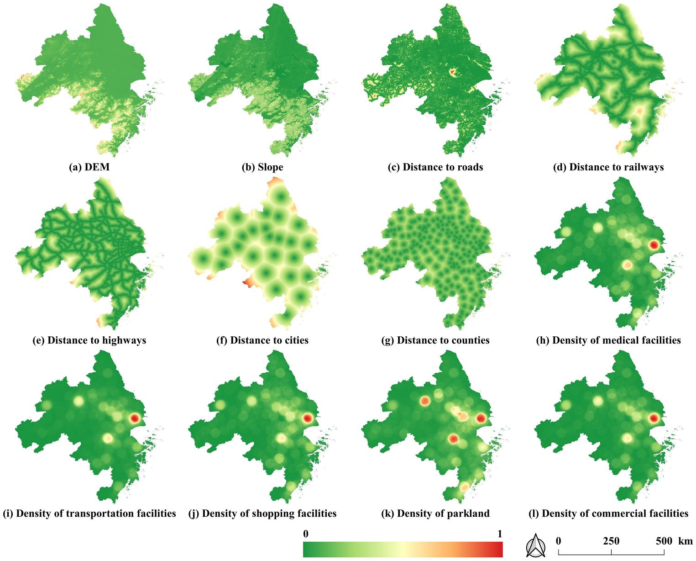

02 · Method
Combined transition probability
Selection via roulette-wheel · Eq. 3–5

Random Forest learns transition rules from driving factors.
Balances supply and demand across land types.
Captures spatial aggregation of neighboring land uses.